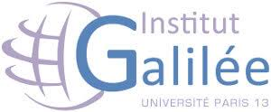

Master 2 en ingenierie et innovation à l'institut de Galilée 
Objectif de la formation :
Le Master mention « ingénierie et innovation en images et réseaux » (M3IR) a pour objectif d’offrir une formation en traitement d’images et réseaux informatiques, à finalité professionnelle ou recherche, selon deux parcours (images, réseaux).
La première année de ce master (M1), commune aux deux parcours, vise à donner aux étudiants les bases scientifiques d’une compétence en traitement du signal et de l’image, en réseaux informatiques, en technologie Java, ainsi qu’en télécommunications numériques.
La deuxième année (M2) propose des enseignements de préparation à l’insertion professionnelle. Elle conserve un tronc commun important et propose une spécialisation via ses deux parcours : le parcours » images » s’oriente vers le domaine du traitement et transport des contenus audio-visuels ; le parcours « réseaux » s’oriente vers les technologies réseaux et le développement d’applications Internet. L’objectif est de fournir aux étudiants les bases théoriques et la maîtrise pratique des technologies liées au multimédia et aux réseaux informatiques, afin de former de futurs professionnels destinés au marché du secteur industriel du transport et du traitement de l’information audio-visuelle et du multimédia. Ce master prépare aussi à une thèse de doctorat dans la perspective d’une carrière de chercheurs ou d’enseignants-chercheurs.
Specialité
Application web
HTML 5
CSS
JAVASCRIPT
Application Internet
Java EE
Spring
Maven
Diplome ingénieur en Réseaux et Télécommunication à l'ensa khouribga 
Objectifs de la formation
Cette formation a pour vocation de maîtriser les réseaux de Télécommunications et résolution des problèmes liés. Le programme de formation oriente vers la maîtrise et le déploiement, l'administration et la sécurité des réseaux de Télécommunication.
Débouchés de la formation
Ingénieurs en Systèmes de Télécommunications
Administrateur réseaux
Ingénieur en Services Télécom
Editeurs de logiciels